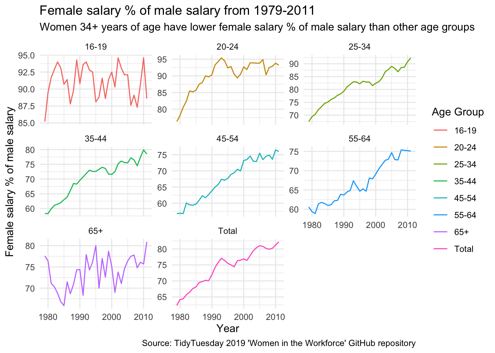

# Load libraries
library(dplyr)
library(ggplot2)
library(here)
# Read in data
# tuesdata <- tidytuesdayR::tt_load("2019-03-05")
# earnings_female <- tuesdata$earnings_female
# employed_gender <- tuesdata$employed_genderExample Analysis
Women in the Workforce
Question(s)
What is the evolution of the gender wage gap over time? How does variation in age and part-time work contribute to the gender wage gap? This exploration is inspired by some of the recent Nobel Prize award-winning work of Claudia Goldin, and attempts to replicate some of her findings using a much more limited data set (Goldin 2014) (Goldin 2015).
Audience
The intended audience members for this example data analysis are other students in my statistical programming course at the Johns Hopkins Bloomberg School of Public Health. This work is a fun classroom assignment that I hope will peak the interest of other curious students.
Note
This analysis is not intended to be a serious academic piece or critique.
Data and data dictionaries
I will be using the earnings_female.csv and employed_gender.csv data sets from the 2019 TidyTuesday GitHub repo for ‘Women in the Workforce’ here (“Women in the Workforce” 2023). I chose not to use jobs_gender.csv since it only contains information from three years. The two data sets, earnings_female.csv and employed_gender.csv, include female percent of male salary by age group and percent of women/men working full-time/part-time from 1979 to 2011. The data originate from the Bureau of Labor and Census Bureau.
See data dictionaries here (“Women in the Workforce” 2023).
Analysis
Download data:
Tip
Avoid API limit for knitting the document using the code below.
# Tests if a directory named "data" exists locally
# if (!dir.exists(here("data"))) {
# dir.create(here("data"))}
#
# ## Saves data only once (not each time you knit a R Markdown)
# if (!file.exists(here("data", "earnings_female.RDS"))) {
# ### Save the file to RDS objects
# saveRDS(earnings_female, file = here("data", "earnings_female.RDS"))
# saveRDS(employed_gender, file = here("data", "employed_gender.RDS"))}
#
# if (!file.exists(here("data", "employed_gender.RDS"))) {
# ### Save the file to RDS objects
# saveRDS(employed_gender, file = here("data", "employed_gender.RDS"))}
# Read in the .RDS dataset locally from our computing environment
earnings_female <- readRDS(here("data", "earnings_female.RDS"))
employed_gender <- readRDS(here("data", "employed_gender.RDS"))Clean/wrangle data:
# Rename 'percent' column to 'percent_female' and 'group' to 'age_group' and 'Year' to 'year' for clarity and consistency in earnings_female.csv
earnings_female <- earnings_female %>%
rename(percent_female = percent, age_group = group, year=Year)
# Relabel 'Total, 16 years and older' to 'Total' in 'age_group' column. Remove anytime 'years' appears in age_group column and relabel '65 years and older' to '65+'
earnings_female <- earnings_female %>%
mutate(age_group = gsub("Total, 16 years and older", "Total", age_group)) %>%
mutate(age_group = gsub(" years", "", age_group)) %>%
mutate(age_group = gsub("65 and older", "65+", age_group))
# Subset employed_gender.csv from 1979 to 2011 to match the time frame from the earnings_female.csv dataset
employed_gender <- employed_gender %>%
filter(year >= 1979, year <= 2011)
# Merge two datasets by year
combined_data <- earnings_female %>%
inner_join(employed_gender, by = "year")
# Keep only part-time % columns since the full-time % columns are redundant: full-time % = 100% - part-time. The data do not contain percentage unemployed
clean_data <- combined_data %>%
select(year, age_group, percent_female, total_part_time, part_time_female, part_time_male)
# View clean_data
head(clean_data)# A tibble: 6 × 6
year age_group percent_female total_part_time part_time_female part_time_male
<dbl> <chr> <dbl> <dbl> <dbl> <dbl>
1 1979 Total 62.3 16.4 26.7 9
2 1980 Total 64.2 16.9 26.8 9.6
3 1981 Total 64.4 17.1 27.1 9.6
4 1982 Total 65.7 18.2 28.1 10.6
5 1983 Total 66.5 18.4 28.1 10.8
6 1984 Total 67.6 17.6 27.1 10.2First, let’s explore the evolution of female percentage of male salary over time, overall and faceted by age group. Claudia Goldin’s work suggests that the gender wage gap has experienced a large convergence toward equality in the last century, but difficulties for women returning to work after having children may result in reduced work in middle age (Goldin 2014). What do the data show?
# Create line plot of female percentage of male salary over time, faceted by age group
ggplot(clean_data, aes(x = year, y = percent_female,color = age_group, group = age_group)) +
geom_line() +
labs(
title = "Female salary % of male salary from 1979-2011",
subtitle = "Women 34+ years of age have lower female salary % of male salary than other age groups",
x = "Year",
y = "Female salary % of male salary",
caption = "Source: TidyTuesday 2019 'Women in the Workforce' GitHub repository"
) +
scale_color_discrete(name = "Age Group") +
theme_minimal() +
facet_wrap(~age_group, scales = "free_y")
Overall, female salary percentage of male salary has risen over the years, from <65% to >80% between 1979 and 2011. But we can see that even by 2011, female salary percentage of male salary drops from >90% to <80% after 35 years of age. The data supports the idea that women experience a greater gender wage gap in the middle age and beyond.
Research from the Pew Research Center, shown on the left, supports the ideas conveyed above as well (Kochhar 2023).
Now let’s take a look at percentage of part-time working females and males over time.
# Subset to all ages combined
clean_data_total <- clean_data %>%
filter(age_group == "Total")We cannot stratify results by age groups, since the TidyTuesday data only contain percentage of part-time work females by year.
# Create scatter plot with regression line of percentage of part-time working females over time
ggplot(clean_data_total, aes(x = year, y = part_time_female)) +
geom_point() +
geom_smooth(method = "lm", formula = 'y~x') +
labs(
title = "Percentage of part-time working females from 1979-2011",
subtitle = "Percentage of part-time working females only decreased slightly over time",
x = "Year",
y = "% part-time working females",
caption = "Source: TidyTuesday 2019 'Women in the Workforce' GitHub repository"
) +
theme_minimal() # Create line plot of percentage of part-time working males over time
ggplot(clean_data_total, aes(x = year, y = part_time_male)) +
geom_point() +
geom_smooth(method = "lm", formula = 'y~x') +
labs(
title = "Percentage part-time working males from 1979-2011",
subtitle = "Percentage of part-time working males increased slightly over time",
x = "Year",
y = "% part-time working males",
caption = "Source: TidyTuesday 2019 'Women in the Workforce' GitHub repository"
) +
theme_minimal()The regression line shows that percentage of part-time working females fluctuated from 1979 to 2011, but decreased only slightly (by 1 percentage point). Percentage of part-time working males from 1979 to 2011 only increased by 2 percentage points. These mild results hint that the reduction of the gender wage gap that occurred during this time span may not be explained by changes in part-time work patterns, but rather other societal and lifestyle factors. In fact, Claudia Goldin’s work points to part-time work as one of the persisting contributors to the remaining wage gap (Goldin 2015).
Summary
In summary, the gender wage gap greatly reduced between 1979 to 2011 from <65% to >80%. Female salary percentage of male salary drops after 35 years of age, and this decreased is still pronounced by 2011. Percentage of part-time working females only decreased by 1 percentage point and percentage part-time working males only increased by 2 percentage points between 1979 to 2011. Perhaps more nuanced historical data on other factors such as employer bias would benefit this currently limited analysis by providing a clearer picture for the reasons behind the reduction of the gender wage gap.
Functions from dplyr, ggplot2
dplyr functions: ‘rename’, ‘mutate’, ‘filter’, ‘inner_join’, and ‘select’
ggplot2 geom_* functions: geom_line, geom_point, geom_smooth
References
Goldin, Claudia. 2014. “A Grand Gender Convergence: Its Last Chapter.” American Economic Review 104 (4): 1091–1119. https://doi.org/10.1257/aer.104.4.1091.
———. 2015. “Hours Flexibility and the Gender Gap in Pay.” Center for American Progress.
Kochhar, Rakesh. 2023. “The Enduring Grip of the Gender Pay Gap.” Pew Research Center’s Social & Demographic Trends Project. https://www.pewresearch.org/social-trends/2023/03/01/the-enduring-grip-of-the-gender-pay-gap/.
“Women in the Workforce.” 2023. TidyTuesday GitHub Repository. https://github.com/rfordatascience/tidytuesday/tree/master/data/2019/2019-03-05.